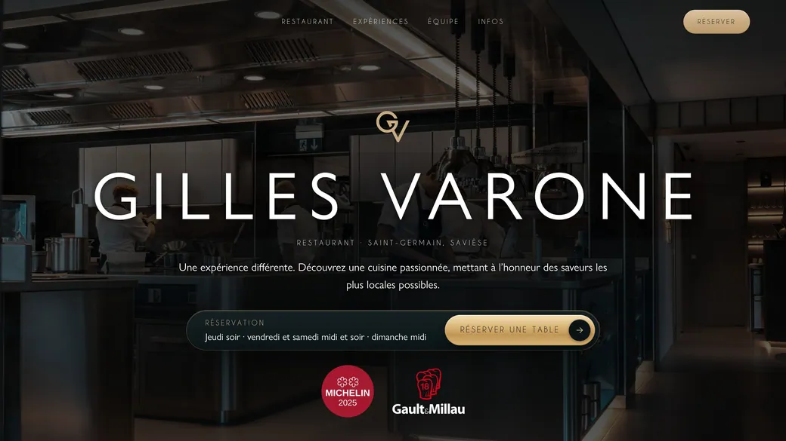
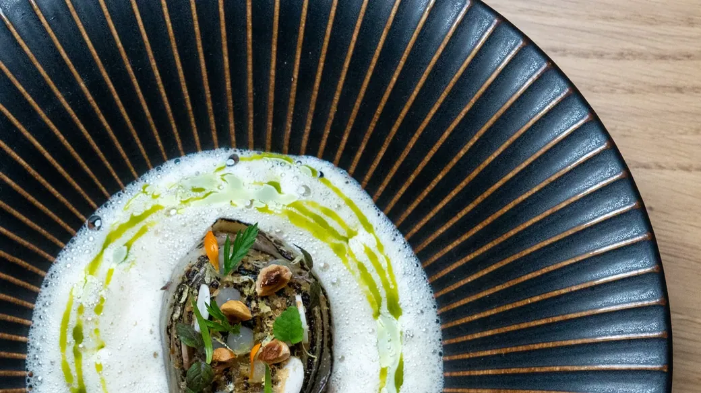
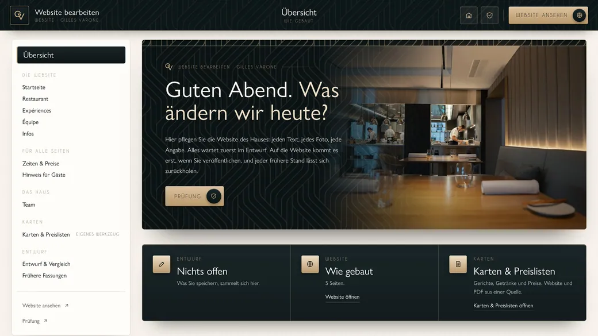
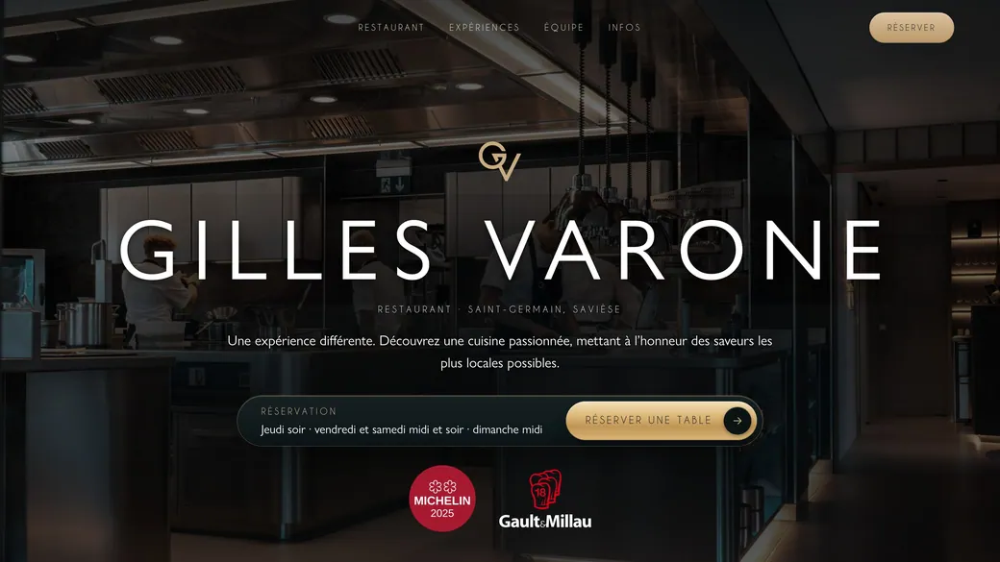
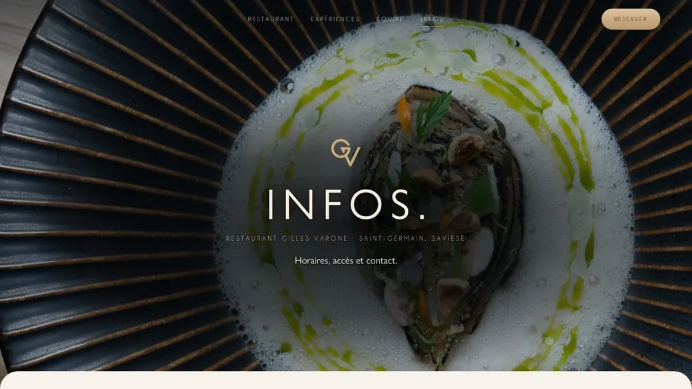
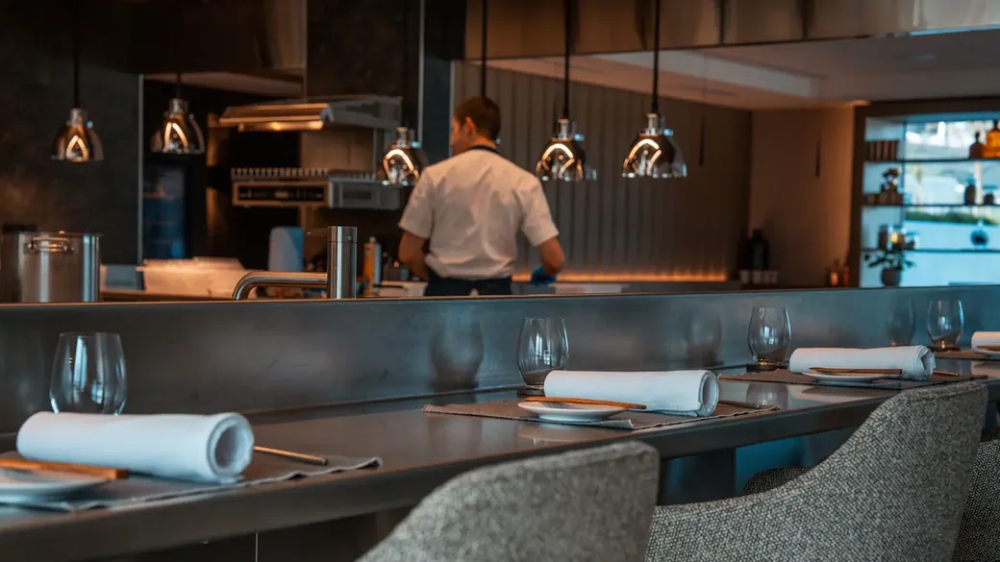

Der Prüfbericht
Was alles geprüftwurde.
Bevor Sie etwas davon sehen, ist es durchgegangen worden: die Website auf jedem Gerät, die Karten Zeile für Zeile, jedes Werkzeug Knopf für Knopf. Hier steht, was genau, ohne Fachwörter. Was offen bleibt, steht auch da.
01Die Website
Die Website

Fünf Seiten von der Startseite bis zu den Infos.
- Am Handy und am Rechner, in Safari- und Chrome-Technik: nichts läuft seitlich über, kein Skriptfehler, kein kaputtes Bild.
- Auf vierfach gebremster Rechenleistung und mit langsamer Leitung gemessen: Die Seiten laufen beim Scrollen ohne Ruckeln, nichts springt beim Laden, jedes Bild im ersten Blick ist fertig.
- Jeder Text kommt von Ihrer heutigen Seite, auf Französisch; die fremden Casino-Texte, die dort eingeschleust sind, sind nicht übernommen.
02Die Karten
Die Karten

Les expériences in fünf, sechs und sieben Services, die Chasse locale und die Accords.
- Wort für Wort von Ihrer Seite übernommen und gegen die Daten geprüft.
- Neu gesetzt in Ihrer eigenen Machart, mit fest eingebetteten Schriften.
03Die sieben Werkzeuge
Die sieben Werkzeuge

Sieben Werkzeuge, mit denen Ihr Team die Seite selbst führt.
- Jedes Werkzeug in einem eigenen Durchgang gebaut und Knopf für Knopf bedient, mit Probe-Daten, nie mit Ihren echten.
- Kein Werkzeug verschickt etwas von selbst und keines öffnet ein Mailprogramm: Antworten an Gäste bleiben als Brief im Werkzeug.
04Ihre Daten und die Ihrer Gäste
Ihre Daten und die Ihrer Gäste

Was die Seite speichert und was nicht.
- Die Website setzt für Gäste keine Kekse. Im Entwurf zählt die Seite keine Besuche; das Werkzeug für die Besuche zeigt Beispielwerte.
- Reserviert wird über Ihr Zenchef, der Gutschein über e-guma; im Entwurf geht nichts an das echte Haus.
- Der Entwurf ist für Suchmaschinen gesperrt, bis Sie ihn freigeben.
05Die Suche
Die Suche

Wie Gäste das Haus finden, wenn sie bei Google suchen oder eine KI fragen. Was heute schon steht und was beim Freigeben dazukommt.
- Solange die Seite ein Entwurf ist, bleibt sie für Suchmaschinen absichtlich unsichtbar. Freigegeben wird sie erst, wenn sie unter Ihrer eigenen Adresse läuft.
- Jede der 5 Seiten trägt einen eigenen Titel und einen kurzen Text für das Suchergebnis.
- Adresse, Telefon, Reservation, Karten und Öffnungszeiten werden beim Freigeben zusätzlich so hinterlegt, dass Google und KI-Assistenten wie ChatGPT sie direkt lesen können, ohne zu raten.
- Jedes Bild hat eine Beschreibung. Das hilft Gästen, die sich die Seite vorlesen lassen, und der Bildersuche.
- Alles Wichtige steht als Text auf der Seite und nicht in Bildern. So kann eine KI, die Gästen bei der Suche hilft, Ihre Expériences, Zeiten und Angebote auch wirklich lesen.
- Ersetzt die neue Seite Ihre heutige, führt jede bisherige Adresse auf die passende neue Seite. So geht kein Platz in den Suchergebnissen verloren, und kein geteilter Link läuft ins Leere.
- Was ausserhalb der Website zählt, gehört genauso dazu: der Eintrag bei Google Maps, Ihre Bewertungen und gleiche Angaben auf Tripadvisor, im Guide Michelin, bei GaultMillau und den anderen Portalen. Auf diese Quellen stützen sich auch KI-Assistenten stark. Das lässt sich in der laufenden Betreuung mitpflegen.
06Was offen bleibt
Was offen bleibt

Diese Dinge liegen nicht in meiner Hand.
- Einige Fotos stammen von Fotografen und aus der Presse. Ob sie bleiben dürfen und wer genannt wird, klären wir mit Ihnen.
- Ihre Weinkarte ist nicht veröffentlicht; sie kommt dazu, sobald Sie sie geben.
- Die Werkzeuge stehen im Entwurf ohne Anmeldung. Bei der Auslieferung bekommt jedes eine Anmeldung und jede Person ihr eigenes Passwort.
- Die Seite spricht Französisch; Deutsch und Englisch folgen.
Jede Zeile hier hat eine Prüfung hinter sich, die sich wiederholen lässt. Wenn Sie zu einem Punkt mehr wissen möchten, fragen Sie mich einfach.
Zurück zu «Alles auf einen Blick»